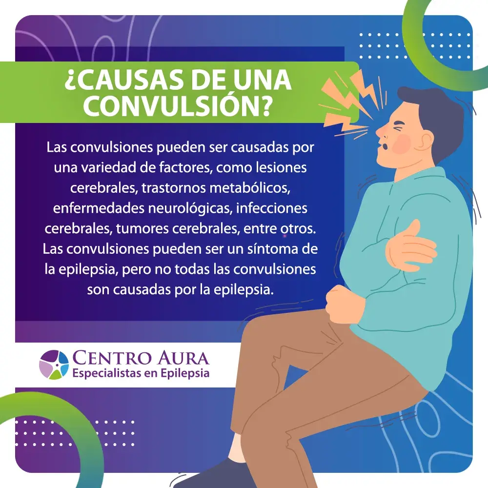
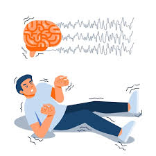

Qué son:
Las convulsiones son alteraciones del sistema nervioso central causadas
por una descarga eléctrica anormal y descontrolada en el cerebro, resultando
en cambios temporales en el comportamiento, la conciencia o los movimientos,
como espasmos, rigidez, confusión o ausencias; pueden ser síntoma de diversas
causas (epilepsia, infecciones, traumatismos, fiebre, desequilibrios metabólicos)
o un signo de una afección neurológicos más grave, requiriendo diagnóstico (EEG, imágenes) y
tratamiento para controlar la actividad neuronal excesiva.
Síntomas comunes
Movimientos espasmódicos incontrolables, temblores, rigidez.
Pérdida de conciencia o confusión breve.
Episodios de ausencia (quedarse "en blanco").
Cambios en emociones (miedo, ira) o pensamientos (déjà vu).
Síntomas sensoriales (luces, sabores extraños) o fisiológicos (babeo, espuma, dilatación pupilar).
Causas frecuentes
Epilepsia: Trastorno cerebral con convulsiones repetidas.
Infecciones: Meningitis, encefalitis.
Lesiones cerebrales: Traumatismos craneales o problemas al nacer.
Metabólicas: Niveles anormales de glucosa o sodio.
Metabólicas: Niveles anormales de glucosa o sodio.
Problemas estructurales: Tumores, hemorragias cerebrales.

